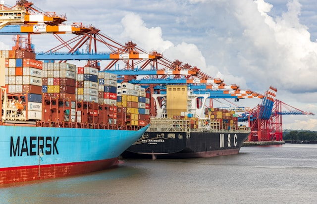

Ekonomideki Yeni Trendler!
Ekonomideki Yeni Trend: Yatırımcılar Hangi Sektörlere Yöneldi?
- Teknoloji Sektörü: Teknoloji sektörü, son yıllarda en hızlı büyüyen ve en çok ilgi gören sektörlerden biri haline gelmiştir. Yatırımcılar, yapay zeka, blockchain, e-ticaret ve dijital sağlık gibi alt alanlara yoğun ilgi göstermektedirler. Bu alanlarda yapılan yenilikler ve girişimler, yatırımcıları cezbetmekte ve büyük potansiyel sunmaktadır.

- Yeşil Enerji: Sürdürülebilirlik ve çevre bilinci giderek önem kazanmaktadır. Bu nedenle, yeşil enerji sektörü, yatırımcıların gözdesi haline gelmiştir. Rüzgar enerjisi, güneş enerjisi, hidroelektrik ve biyoyakıt gibi yenilenebilir enerji kaynaklarına yapılan yatırımlar artmaktadır.
- Sağlık ve İlaç Sektörü: Sağlık sektörü, demografik ve teknolojik değişimlerle birlikte büyük bir dönüşüm geçirmektedir. Yatırımcılar, sağlık teknolojileri, biyoteknoloji ve ilaç şirketlerine büyük ilgi göstermektedirler. Özellikle pandemi süreci, sağlık sektöründeki yenilikçi çözümlere olan talebi artırmıştır.

- E-Ticaret: Dijitalleşme ve online alışveriş alışkanlıklarının artmasıyla birlikte, e-ticaret sektörü hızla büyümektedir. Yatırımcılar, online perakende platformlarına, lojistik şirketlerine ve dijital ödeme sistemlerine yatırım yapmaktadırlar.

- Yenilenebilir Kaynaklar ve Geri Dönüşüm: Doğal kaynakların sınırlı olduğu bir dünyada, yenilenebilir kaynaklara ve geri dönüşüm teknolojilerine olan talep artmaktadır. Yatırımcılar, atık yönetimi, su arıtma, geri dönüşüm tesisleri ve yenilenebilir materyaller gibi alanlara yatırım yapmaktadırlar.

- Sonuç olarak, ekonomideki yeni trendler, yatırımcıların dikkatini çeken belirli sektörlere odaklanmalarına neden olmaktadır. Teknoloji, yeşil enerji, sağlık, e-ticaret ve yenilenebilir kaynaklar gibi alanlar, gelecekte büyük potansiyel sunmaktadır ve yatırımcılar için cazip fırsatlar barındırmaktadır.